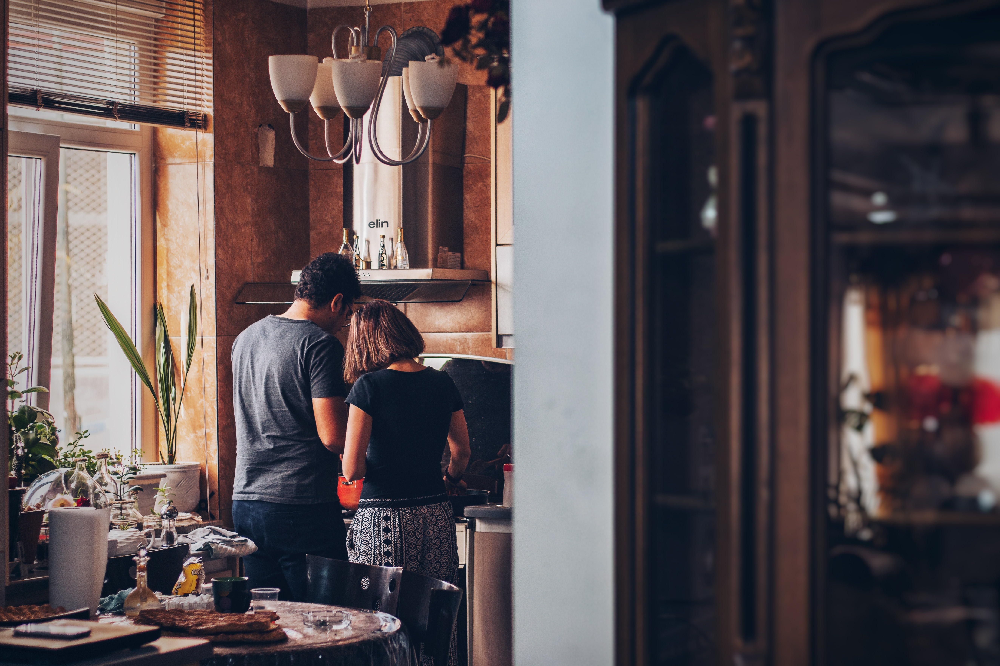

Odin Recipes

Photo by Soroush Karimi on Unsplash
Here is a list of our favorite recipes:
This website was created as a project from The Odin Project's foundations course
Photo by Soroush Karimi on Unsplash
Here is a list of our favorite recipes:
This website was created as a project from The Odin Project's foundations course